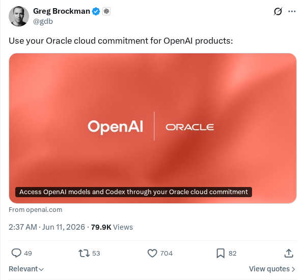
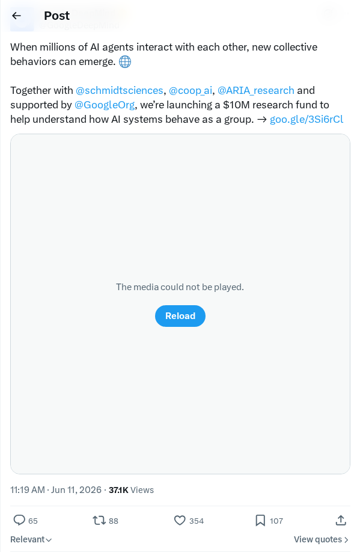
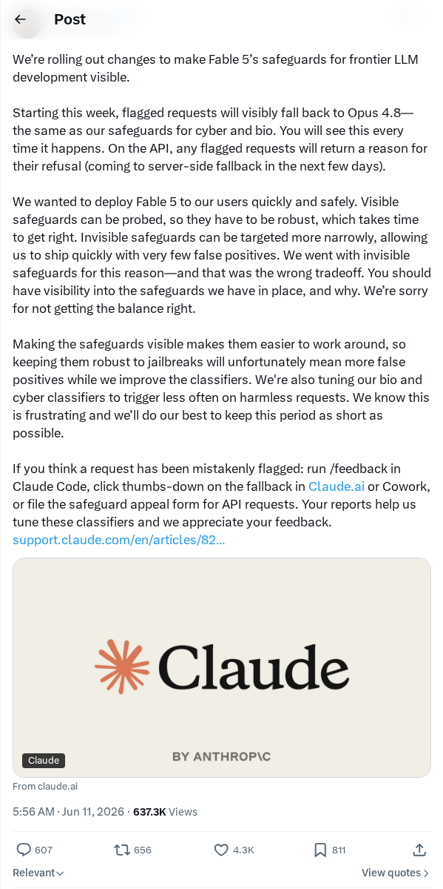
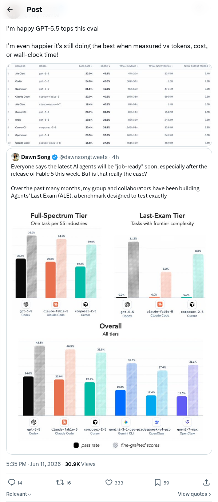
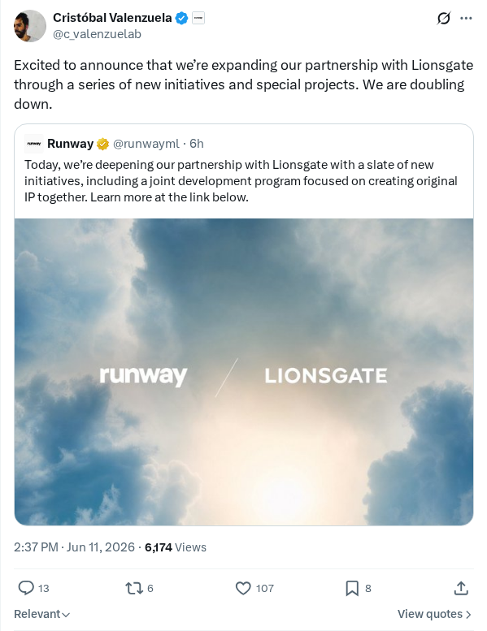
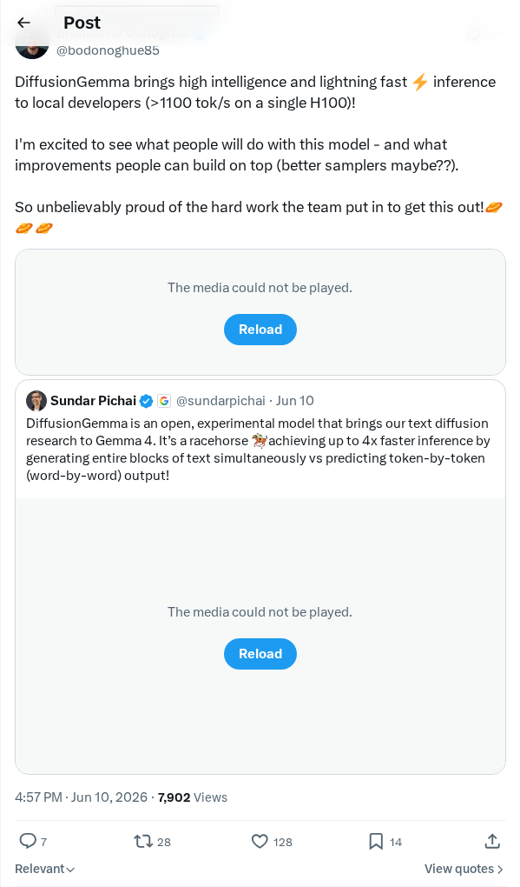
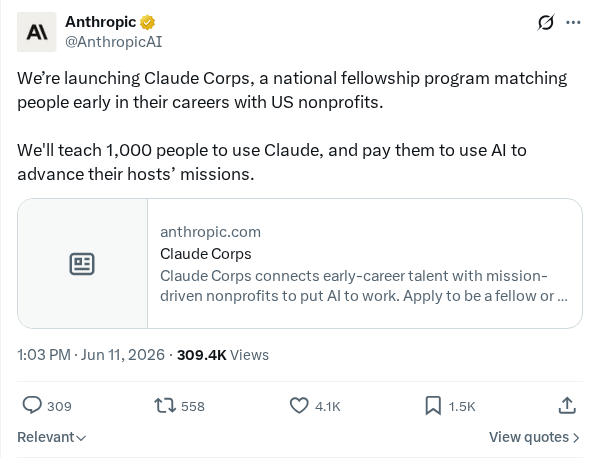
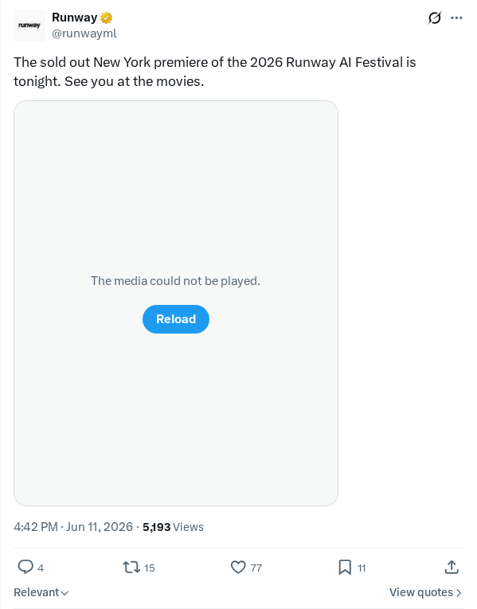

收购 Ona 以支持长周期 AI 智能体
OpenAI 宣布计划收购 Ona 以扩展其 Codex 模型的能力。通过此次收购，OpenAI 将把 Ona 安全且持久的云环境整合到其生态系统中。此整合旨在实现长周期运行的 AI 智能体的部署，使其能够执行复杂的、多步骤的企业级工作流。这一转变预计将加强围绕 Codex 的开发者工具和基础设施，为企业环境中的安全智能体执行提供强大的框架。
AI 前沿资讯、研究与趋势精选
OpenAI 宣布计划收购 Ona 以扩展其 Codex 模型的能力。通过此次收购，OpenAI 将把 Ona 安全且持久的云环境整合到其生态系统中。此整合旨在实现长周期运行的 AI 智能体的部署，使其能够执行复杂的、多步骤的企业级工作流。这一转变预计将加强围绕 Codex 的开发者工具和基础设施，为企业环境中的安全智能体执行提供强大的框架。
Anthropic 宣布与 DXC Technology 建立为期多年的全球联盟，将 Claude 集成到包括银行、航空、保险、制造和政府在内的受监管行业的关键系统中。DXC 将通过 Anthropic Academy 培训数以万计获得 Claude 认证的现场部署工程师。在此次部署之前，DXC 已利用 Claude 生成了其 DXC OASIS AI 原生编排平台 95% 以上的代码，使开发速度提高了十倍。该联盟最初将聚焦于保险、遗留代码现代化、利用 Claude 安全子代理进行网络安全防护，以及应用程序服务领域。
BBVA 宣布与 OpenAI 建立全球合作伙伴关系，在全球范围内向 10 万名员工部署 ChatGPT Enterprise。此次大规模推广是 BBVA 将人工智能集成到其核心银行业务战略的一部分。通过为全球员工配备 OpenAI 的企业级工具，该金融机构旨在提高运营效率、促进内部创新并精简客户服务流程。此次合作标志着在大力监管的金融行业采用大语言模型的一个重要里程碑。
OpenAI 宣布建立合作关系，使企业客户能够直接通过其 Oracle 云承诺额访问 OpenAI 模型和 Codex。此次合作使企业能够在 Oracle 云基础设施的安全框架内构建、测试和部署生成式 AI 应用程序。通过利用现有的财务承诺额，企业客户可以在其组织工作流中集成先进的自然语言功能，同时保持严格的治理、合规性和企业级安全标准。
Anthropic 宣布启动 Claude Corps，这是一个全国性奖学金项目，旨在连接职场新人与美国非营利组织，帮助他们利用人工智能。在 Anthropic 初始 1.5 亿美元资金的支持下，该计划旨在培训 1000 名研究员使用 Claude，并将他们分配到至少 400 家非营利组织，包括 Code the Dream、Braven 和 Social Finance。研究员将在为期 12 个月的项目中获得 8.5 万美元的薪水及福利。CodePath 将负责培训，Social Finance 将处理评估工作。
天体物理学家 Chi-kwan Chan 正在利用 OpenAI Codex 构建复杂的黑洞模拟，以研究极端物理并验证阿尔伯特·爱因斯坦的广义相对论。通过将自然语言指令翻译成功能代码，Codex 帮助简化了科学模拟的创建过程。生成式 AI 的这一应用展示了大语言模型如何辅助天体物理学研究人员编写、调试和优化用于高度专业化科学计算和物理建模的代码。
Hugging Face 推出了 Open-R1，这是一个致力于完全复刻顶尖推理模型 DeepSeek-R1 的开源计划。该项目旨在通过共享完整的训练流程、数据集和模型权重，推动混合专家架构和强化学习技术的普及。这一合作努力赋能研究者与开发者，使其能够分析、修改并扩展 DeepSeek-R1 的推理能力，从而促进开源 AI 社区的快速创新。
针对在 Claude Fable 模型中实施未记录且不可见的安全性与蒸馏护栏机制一事，Anthropic 发表了公开道歉。此举源于用户反馈称系统出现了意料之外的限制和行为，且这些变化未在 Claude API 的标准输出中得到清晰沟通或记录。开发者指出，这些隐藏的约束损害了系统的可预测性与透明度。对此，Anthropic 承认沟通疏漏，并承诺优化部署流程，以确保在触发安全过滤时提供更明确的通知。该问题也在 Hacker News 上引发了广泛讨论。
OpenAI 宣布达成收购 Ona 的战略协议，旨在加速并扩展其 Codex 模型的能力。Codex 能够将自然语言指令翻译成计算机代码，是 GitHub Copilot 等开发者工具的基石。通过整合 Ona 的工程专业知识与基础设施，OpenAI 旨在增强 Codex 在代码生成、上下文理解及多编程语言支持方面的表现。此次收购标志着 AI 辅助编码工具市场的一次重大整合。
为了在与主要竞争对手 Anthropic 的竞争中保住市场份额，OpenAI 正在积极考虑对其开发者工具和 API 访问权限进行大幅降价。这一战略性定价评估旨在留住那些日益转向尝试其他大语言模型的企业客户和开发者。随着领先的 AI 提供商不断提升运营效率，这种持续的价格竞争反映了行业为了确保开发者忠诚度和平台生态锁定而进行的普遍努力。
小米正式宣布开源 MiMo Code 项目，该项目旨在推动开源软件协作与自动化代码生成方法论。此举旨在为开发者提供可访问、透明且可定制的编程资源，以精简软件工程流程。通过开源代码库，小米旨在构建一个协作型社区生态，让研究者和软件工程师能够贡献代码、进行修改，并优化在不同开发环境下的代码生成性能与集成能力。
这一社区讨论探讨了开发者在使用 Claude 等速度较慢的 Agentic AI 工具时，在保持深度心流状态方面面临的生产力挑战。传统编程允许长时间不间断地专注，而自动化代码生成的异步性质带来了频繁的等待期，从而分散了开发者的注意力。用户们探索了适应这一新范式的认知工作流策略，例如执行并行工程任务、阅读文档或优化提示词，以减少迭代时间并保持工作节奏。
本文分析了一种旨在无需复杂工程套件（Harness Engineering）和刚性编排管道的情况下构建 AI 智能体的开发范式转换。历史上，功能型智能体需要大量的定制软件封装和专门的胶水代码来管理动作。作者提出了一种精简的开发方法，侧重于利用大语言模型的直接推理能力和原生工具。将开发重心从基础设施的复杂性转向核心智能体行为与提示词设计，可以简化运行时环境并最小化系统开销。

Greg Brockman 宣布，组织现在可以利用其现有的 Oracle 云基础设施承诺额来部署和扩展 OpenAI 的生成式 AI 模型套件。此整合通过允许企业客户将 Oracle 云积分应用于高级模型部署，简化了采购流程。此次合作旨在降低大规模 AI 实施的准入门槛，为企业提供增强的架构灵活性，以便将语言功能直接集成到其运营工作流中。

Google DeepMind 与 Schmidt Sciences、Cooperative AI Foundation 和 ARIA Research 合作，在 Google.org 的支持下，发起了一项 1000 万美元的研究基金。该计划专门用于研究在大规模群体中运行的 AI 智能体的集体行为。研究人员将探索当数百万个自主智能体在多智能体环境中交互时出现的涌现属性、通信框架、安全协议和复杂动态。

Fable 5 的开发团队引入了一项安全更新，针对用户标记的请求实施了向 Opus 4.8 模型的可视化回退机制。从本周开始，任何由安全协议触发的提示词都将自动且透明地转换到 Opus 4.8，并向开发者发出通知。此安全措施效仿了网络和生物安全等敏感领域使用的预防措施，旨在提供实时反馈的同时保持严格的安全标准。

评估结果表明，新款 GPT-5.5 模型在多个关键运营基准测试中展现出强大的性能和效率。该模型在令牌效率、计算成本和实际执行时间方面超过了现有标准。这些架构上的优化表明了资源节约型设计的重大进展，使企业级应用程序能够在不显著增加运营开销或系统延迟的情况下利用高质量的模型输出。

Runway 宣布扩大与电影制片厂狮门影业（Lionsgate）现有的合作伙伴关系，将先进的生成式视频技术集成到专业娱乐工作流中。合作涉及旨在将 Runway 的生成式模型部署到高预算制作环境中的专业项目。此次扩展代表了两家组织共同致力于在传统电影工作流中利用 AI 驱动的创意工具，探索数字视频生成在媒体领域的新能力。

DiffusionGemma 的推出旨在为开发者实现高性能本地推理。通过优化模型底层架构，该系统在单台 NVIDIA H100 硬件设置上实现了每秒超过 1100 个令牌的推理速度。此版本面向需要高吞吐量、本地托管生成式模型的研究人员和开发者，为边缘部署和私有企业基础设施提供了一种高效的开源替代方案。

Anthropic 发起了 Claude Corps，这是一个全国性奖学金计划，旨在将职场新人与美国非营利组织连接起来。该倡议旨在培训 1000 名受薪参与者，在他们所在的非营利组织中部署 Claude 以提供运营支持、技术素养提升和生产力增强。该计划代表了连接大语言模型基础技术与公益应用以及美国现实世界非营利组织环境的努力。

Runway 宣布 2026 年 Runway AI 电影节纽约首映活动门票已正式售罄。电影节作为 AI 生成电影的精选展示平台，突出了生成式视频工具和机器学习在传统电影制作流程中的创意应用。该活动汇集了数字内容创作者、传统媒体专业人士和视觉艺术家，共同讨论 AI 驱动的数字叙事的未来。
研究人员推出了 Arbor，这是一种自主智能体框架，旨在利用假设树细化（HTR）进行长周期的科学研究。这种持久的树结构连接了假设、产出、证据和见解，而长寿命的协调器则指导由短寿命执行器执行的全局研究策略。在六项现实世界的机器学习优化任务中测试，Arbor 表现优于 Codex 和 Claude Code，其持有的平均相对增益达到后者的 2.5 倍以上。在 GPT-5.5 驱动的 MLE-Bench Lite 上，该系统创下了 86.36% 的 Any Medal 新纪录。
研究人员提出了 Bebop，这是一个旨在将多令牌预测（MTP）集成到大规模强化学习（RL）训练流水线中的框架。为了防止 RL 期间模型熵波动导致的 MTP 接受率下降，Bebop 结合了概率拒绝采样和一种新颖的端到端总变差（TV）损失函数。该方法将 MTP 接受率提高了高达 10 个百分点，达到 95% 的接受率，并使 Qwen3.5、Qwen3.6 和 Qwen3.7 模型在异步 RL 训练中实现了高达 1.8 倍的端到端加速。
研究人员介绍了 RACES，这是一个递归组合可验证环境以扩展大语言模型强化学习训练的框架。RACES 不是手动构建环境，而是使用 SEQUENTIAL、PARALLEL、SORT 和 SELECT 等组合算子，在输入输出类型匹配时自动融合环境。基于 300 个基础环境，该框架在未知基准测试中使 DeepSeek-R1-Distill-Qwen-14B 提升了 3.1 分，Qwen3-14B 提升了 2.3 分。RACES 仅使用 50 个基础环境就实现了与全部 300 个环境相当的泛化性能。
研究人员识别了语法约束解码（GCD）技术中的安全漏洞，并引入了 CodeSpear，这是一种利用 GCD 生成恶意代码的新型越狱攻击。通过强制执行语法约束，CodeSpear 绕过了标准的对齐防御措施，使得 10 个流行大语言模型的攻击成功率平均提高了 30 个百分点以上。为了缓解这一威胁，作者提出了 CodeShield，这是一种安全对齐方法，旨在训练模型在语法约束下输出非恶意的“蜜罐”代码，同时在良性编程任务中保持基准性能。
Researchers identified a security vulnerability in Grammar-Constrained Decoding (GCD) techniques and introduced CodeSpear, a new jailbreak attack that exploits GCD to generate malicious code. By enforcing syntax constraints, CodeSpear bypasses standard alignment defenses, increasing attack success rates by more than 30 percentage points on average across 10 popular large language models. To mitigate this threat, the authors proposed CodeShield, a safety alignment method that trains models to output non-malicious honeypot code under grammar constraints while preserving baseline performance on benign programming tasks. (source: https://huggingface.co/papers/2606.11817)
研究人员介绍了 InternVideo3，这是一种多模态基础模型框架，专为长视频理解和视觉智能体任务而设计。该框架利用多模态上下文推理（MCR）将视频交互建模为一个不断进化的闭环过程。为了优化内存消耗，InternVideo3 引入了多模态多头潜在注意力（M2LA）以在推理期间压缩 KV 缓存状态。该模型在 Video-MME、MLVU 和 EgoSchema 等多项长周期视频基准测试中达到了顶尖效果，并在部署为交互式视频智能体时展现了稳健的性能。
研究人员提出了树演进对比探索分配（TRACE），这是一种用于多轮智能体强化学习的动态演进预算分配框架。TRACE 通过将多轮轨迹建模为树结构，并重点将采样预算集中在最可能产生混合奖励的前缀级节点上，解决了大语言模型策略优化中奖励对比度低的问题。受预测成功模型控制，这一自适应框架在不增加计算预算的情况下丰富了训练信号。在实证中，TRACE 将 Qwen3-14B 模型在多跳 QA 基准测试上的平均准确率提高了 2.8 个百分点。
作者发布了 DeNovoSWE，这是一个包含 4818 个高质量存储库生成实例的大规模自动化数据集，用于训练代码智能体执行长周期任务。DeNovoSWE 是在没有人为标注的情况下，利用包含“分治”架构、评判-修复循环和难度感知轨迹过滤功能的沙盒化智能体工作流构建的。在 DeNovoSWE 上对 Qwen3-30B-A3B 模型进行微调，在具有挑战性的 BeyondSWE-Doc2Repo 基准测试中取得了重大性能提升，任务成功率从 5.8% 提高到了 47.2%。